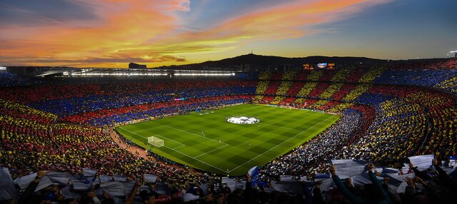
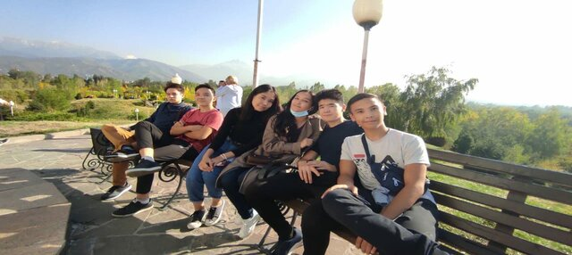

Простое портфолио
Обо мне
Ф.И.О. : Анкенов Жасулан Марканович
Дата рождения: 11.09. 2003
Проживание: г. Алматы, Алатауский р-н.Мкр. Ужет. Бекболата 13\4
Достижения: не имеются
Опыт работы: Оператор(2 месяца)
Образование:
2019-Н.В. Экономический колледж Университета Нархоз г. Алматы
Факультет «Вычислительная техника и Программное обеспечение»; Специальность: «Программист»;
Навыки: HTML/CSS
Хобби
Футбол
Моим самым главным увлечением является футбол. Я просто обожаю футбол и это не описать простыми словами. Всегда стараюсь не пропускать ни одной игры моей любимой команды.
Программирование
Ну конечно одним из моих хобби является программирование! А в программировании мне нравится сфера веб-разработки. И свободное время я иногда делаю сайты.

Проводить время с друзьями
Думаю что всем нравится проводить время с друзями. Когда находищься с друзями то можно забыть о всех своих проблемах, обо всем, просто чувствуешь себя комфортно
Смотреть сериалы, фильмы и.т.д.
Еще одним моим увлечением в свободное время является смотреть разные фильмы, сериалы и аниме. Они помогают мне расслабиться и просто чувствовать себя хорошо.

Читать
Ну и еще мне нравиться читать книги. Но чиать начал я недавно.А из жанров книг мне нравятся Драмы и Приключения! С помощью чтения можно увеличить словарный запас.
Англиский
Так как сейчас самый востребованным языком является англиский, всегда стараюсь учить его. С помощью этого языка я разговориваю с разными людьми с других стран, и это очень весело!